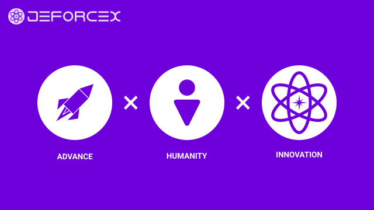
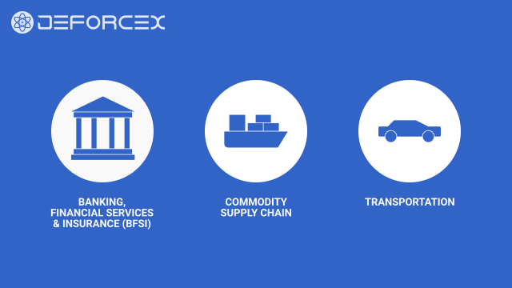
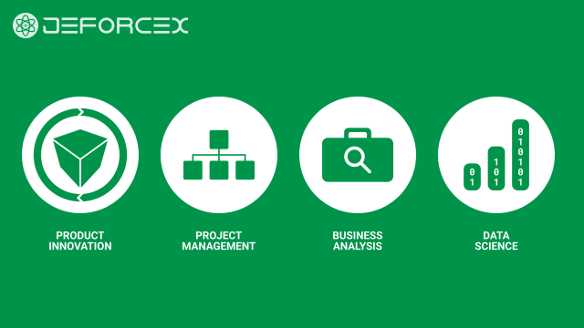
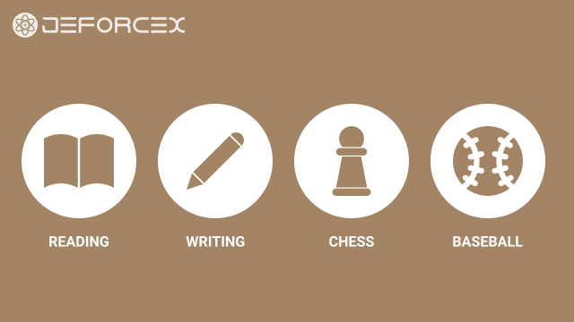

Jay Force (a pseudonym) is the Innovator of JΞFØRCΞX, a Private Individual Natural Person with an aspiration to Advance Humanity through Innovation. Learn more about the Aspiration, Experience, Skill, and Interests & Hobbies of Jay by exploring the respective sections.
Avatar: Symbolic Icon of the Innovator

Image: Collage of Symbolic Icons as Representation of the Innovator's Aspiration.
Jay is grateful to the Innovators of the yesteryears who created life-changing technologies (e.g. Computer, Internet, Social Media, Artificial Intelligence), and aspires to give back by Innovating for the Next Generation of Humanity.
The Areas of Focus for Innovation that are aligned with Jay's Strengths and Interests include Game, Storytelling, and Automation.
Jay possesses Professional Experience spanning across the Banking, Financial Services & Insurance (BFSI), Commodity Supply Chain, and Transportation domain spaces.
By deploying rigorous systems architecture and robust operational frameworks, Jay orchestrates digital transformation initiatives designed to navigate complex regulatory landscapes, streamline multi-tiered logistical networks, manage institutional risk, and drive resilient value delivery across mission-critical industries.

Image: Collage of Symbolic Icons as Representation of the Innovator's Experience.

Image: Collage of Symbolic Icons as Representation of the Innovator's Skill.
Jay operates at the intersection of strategic Product Innovation and disciplined Project Management, developing scalable solutions designed for sustainable value delivery.
By integrating rigorous Business Analysis with Data Science methodologies, Jay translates complex empirical insights and market requirements into actionable frameworks, optimized workflows, and transformative digital products.
Outside of the workplace, Jay enjoys indulging in a curated set of activities including:

Image: Collage of Symbolic Icons as Representation of the Innovator's Interests & Hobbies.